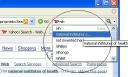

Yahoo yeni sitesini yayına aldı yahoo.com/preview adresinden uzun zamandır erişilebilen yahoo anasayfası bu gün yayına girdi. Yeni anasayfanın farklı bir sayfa yapısı var. Ajax ve DHML ile destekli site kişisel araçlar ön plana çıkarılmış durumda.
devamını okuGoogle Notebook - Not tutmanın kısa yolu
Bu gün Ceyhun'la Google Desktop'daki Scratch Pad üzerine konuşuyorduk. Güzel bir araç ancak eksik olduğunda n bahsediyorduk. Bir tablama ile birden fazla not ekelyebilmeliyiz diyorduk. Sonra akaşam eve geldim. Bir şey aratıyordum ki bir baktım Google zaten bu söylediklerimiz yapmış. Google Notebook ile Evet gerçekten Google yazılım geliştiricileri ...
devamını okuCSS İpuçları - 2
CSS ile sayfa planlama ve gelişmiş sayfa tasarımlarında başınıza bir çok hata gelebilir. Bu gayet normal bir haldir. Mesele bu hataları çözmektir. Hata çözmede izlenecek yöntemlerden bir tanesi elementlere kenar çizgisi(border) atamaktır.
li a { border: 1px solid red; }
Diğer bir yöntemde elemente ardalan rengi(background-color) uygulamaktır. :::css #icerikalani { background-color ...
devamını okuCSS İpuçları - 1
Bir yazı tipi(font) tanımlaması yapılırken eğer yazı tipi adı arasında boşluk varsa(örn: Times New Roman) uygulamada sorun olur. Sorunun çözümü boşluk olan yazı tipi ismini çift tırnak("") içine almaktır.
devamını okubody{ font-family: times, "times new roman", serif; }
Kod renklendirmek için javascript
Bir çok editörün yaptığı işi web sayfalarımızda yapmak için javascript ile hazırlanmış kod. Uygulması ve geliştirmesi gayet kolay olan koda ulaşmak için tıklayınız.
devamını okuFirefox 2 Beta ile birlikte Yahoo hızlı arama geliyor
Firefox 2 Beta ile birlikte Yahoo hızlı arama (Live Search) arama bölümüne ekleniyor. Google ile sıkı ilişkileri olan Firefox bundan sonra nasıl bir çizgi izler bilinmez.
devamını okuADSL ve Telfon Ücretlerine İndirim geliyor
Türk Telekom, telefon ve ADSL tarifelerinde 17 Temmuz Pazartesi gününden itibaren indirim yapacak. Türk Telekom Genel Müdürü Paul Doany, telefon ve ADSL tarifelerinde indirim yapılacağını söyledi. Paul Doany, yaptığı basın toplantısında, ses ve veri tarifelerine ilişkin değişikliklerin imzalanmasının Pazartesi günü gerçekleşeceğini ve ADSL konusundaki tarife değişikliğinin de yakın zamanda açıklanacağını ...
devamını okuJavascript1.7 versiyonu geliyor
Javascirpt 1.7 versiyonun geliyor. İlk destekleyen web tarayıcısı Firefox2.0(Beta) Ayrıntılı bilgi için tıklayınız. (İng.)
devamını okuWindows Vista Explorer yeni özellikleri
Windows Vista'nın piyasaya sürümü yaklaştıkça özellikleri ortaya çıkmaya başladı. Windows Vista Explorer yeni özellikleri ve ekran görüntüleri ile ilgili güzel bir makale. (İngilzice) Ayrıntılı bilgi için tıklayınız.
devamını okuFirefox 2 Betasını çıkarmış
Evet Firefox 2 Beta çııktı. İsteyen burdan indirebilir. imdirmek için tıkla Ayrıntılı bilgi alamak için tıkla
devamını oku